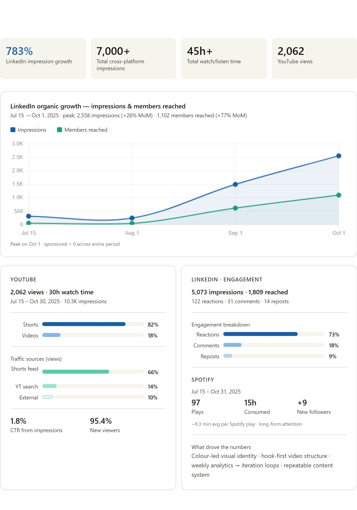
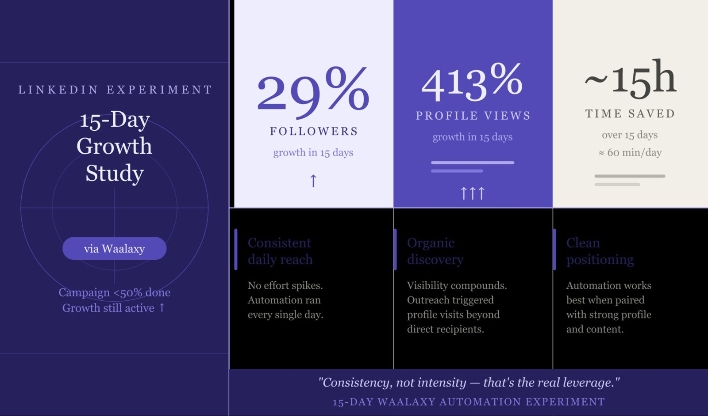

0%
LinkedIn engagement growth in four months, through a repeatable, design-led post framework.
VenturX Capital, New York
hello, I’m Bhupender —
AI & Product Solutions Consultant building the connective tissue between AI systems, product and growth. Currently designing AI-enabled solutions for ESG and sustainability clients at VECTRA International.
Measured outcomes from AI data pipelines, growth engagements and content operations.
LinkedIn engagement growth in four months, through a repeatable, design-led post framework.
VenturX Capital, New York
AI data points validated, with zero client-reported quality failures.
Labelbox · V7 Labs · Outlier
SEO articles published at consistent ranking.
Inventiva
Legal and technical documents translated and QA’d.
98%+ satisfaction, 10 months
Concurrent clients managed without a single SLA breach.
on time, every sprint
Fewer manual production steps after building GPT-4 and Claude content workflows (team estimate).
Figmenta, London
I translate complex business problems into scalable, AI-enabled solutions, with the operator’s eye for what actually ships.
I started inside LLM training and multilingual data QA, moved through AI-driven content and marketing operations, and now design AI-enabled solutions for ESG and sustainability clients at VECTRA International.
That path gave me a cross-functional foundation: prompt engineering and model evaluation on one side, client discovery, pricing research and proposal structuring on the other. I’ve spent two-plus years across remote-first teams in the US, UK, EU, Singapore and India.
I’m looking for long-term, full-time work in Product and AI Solutions where I can apply that foundation in depth.
— Bhupender
ESG and sustainability consulting firm. A cross-functional seat combining product management, management consulting, AI/ML strategy and UX research.
AI Solutions Consultant Jul 2026 – Present
Operations Intern May 2026 – Jul 2026
Fixed-term project contract, scope defined upfront and delivered in full.
Defined-scope engagement supporting an early-stage VC fund’s full growth function.
Concurrent AI data contracts; project-based output agreements.
Part-time content contract with a defined article quota, concurrent with annotation work.
Concurrent contract engagements across leading AI data platforms.
Freelance contract; built technical-language QA skills that carry directly into multilingual NLP work.
Presentations, project archives and published writing. Open any card for detail.
A slide-by-slide breakdown of product thinking, UX rationale and design decisions.
AI training pipelines, organic growth, technical SEO, founder-led ambiguity, automation, AI search and an agentic build.
Hover a tool to bring it to life, or filter by discipline.
Prompt engineering, LLM output evaluation, human-in-the-loop QA, hallucination reduction, ethical AI governance.
Solution scoping, roadmap input, AI workflow and automation design, client discovery, proposal structuring.
Market and competitor research, pricing benchmarks, lead enrichment, CRM analysis, client presentations.
SEO/AEO strategy, full-funnel content, LinkedIn and YouTube growth, KPI and channel reporting.
Hindi, Punjabi, English. Transcription, translation and dataset QA across text, voice and vision.
Systems that keep running after the engagement ends: that’s the standard I hold my work to.Reference available from Sydney Wong, Founder & CEO, VenturX Capital, New York
so, what are we building?
Open to long-term, full-time roles in Product and AI Solutions. Remote, and happy to work with global teams.
AEO playbooks, brand concepts, app QA strategy, competitor analysis, SEO agent roadmap, WhatsApp agent, product studies and campaign docs.
Answer Engine Optimisation for AI-driven search: keyword datasets, intent mapping, AI-first content structure.
Feasibility and QA strategy: risk assessment, go/no-go analysis, technical sustainability.
Competitive landscape analysis informing strategic decisions and campaign prioritisation.
Flow logic, prompt architecture and integration specs for an operational AI agent.
Pipeline design, automation scenarios and a phased implementation plan.
Identity, tone and market differentiation for an early-stage product.
Technical viability, scope definition and launch readiness.
Multi-format scripts aligned to brand voice and platform strategy.
Discord as a B2B community and growth channel, with recommendations.
Podcast production docs, campaign analysis, a 4-month growth report, performance datasets, content calendars and automation scenarios.
Channel-by-channel performance: 783% LinkedIn growth, YouTube retention, cross-platform insights.
High-retention editing, hook testing, watch-time optimisation, episode-level analysis.
Annotation project documentation, prompt engineering samples, LLM evaluation outputs and multilingual QA system notes.
Andovar · LXT AI · Labelbox · Outlier · Uber — Prompt Engineer, Annotator, Multilingual QA
Modern AI systems fail not because of algorithms alone, but because of noisy data, weak labels, cultural blind spots, and poorly designed prompts. My role was to operate inside these fault lines — improving data fidelity before models reached production scale.
Speech & Voice (Andovar) — multilingual voice commands, transcript correction, accent robustness.
Computer Vision (LXT) — bounding boxes, segmentation, skeleton maps for pose estimation.
LLM Evaluation (Outlier) — prompts in 3 languages, response rating for accuracy and reasoning depth.
Classification & OCR (Uber) — text domain classification, food image labelling, handwriting recognition.
VenturX Capital, New York — Marketing Operations Analyst

Figmenta, London — Content & QA, expanded to Product, AI & GTM Ops
Figmenta.com — SEO Operations & Systems Owner
Personal account — campaign less than 50% complete at close

LinkedIn personal profile — AEO, entity clarity, signal consistency
This experiment tested LinkedIn performance in AI-driven search environments, where results are selected and synthesised rather than only ranked. The goal: position one profile as a clear, reliable entity likely to be extracted by language models.
Traditional SEO assumes keyword density improves ranking. AI search rewards coherent identity. If profile structure and language stay consistent, AI systems will prefer it over keyword-heavy but fragmented alternatives.
AEO · SGE · E-E-A-T · Entity optimisation
Conceived, designed, and ran a structured experiment to test whether Google’s AI Overview (SGE) could be influenced via structured content and entity signals. Applied a keyword sequencing and density method to a LinkedIn profile targeting a specific query — the profile ranked #1 on Google AI Search out of 2,800+ competing profiles. The full methodology is documented as a replicable AEO framework covering entity structuring, answer-first framing, E-E-A-T signal alignment, and structured keyword placement. See also case study 06.
OpenAI Codex · Claude Code · Cursor · GitHub Pages
Defined the product scope, wrote prompts to spec, iterated with OpenAI Codex, and deployed directly to GitHub Pages — no local IDE. End-to-end ownership of a shipped product: spec → prompt engineering → build → version control → live deployment. Claude Code and Cursor handled additional agentic coding tasks, including this redesign. Built with HTML, CSS, and JavaScript.